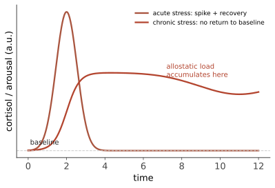

临床 III · 压力、健康与幸福
心理与身体不是两个系统。本页讲三件事：压力如何进入身体（机制清楚、证据扎实）、健康行为的心理学、以及幸福感研究——后者是积极心理学的领地，也是复现危机受害最重的分区之一，本站会逐条标注。
1. 压力的生理学
双通路：交感-肾上腺髓质（快，秒级：肾上腺素 → 心率血压上升）+ HPA 轴（慢，分钟到小时：皮质醇）。Selye 的一般适应综合征：警觉 → 抵抗 → 衰竭。

【稳】压力的健康后果：慢性压力与心血管疾病、免疫功能（伤口愈合变慢、疫苗抗体反应下降的实验证据很硬）、代谢综合征、抑郁风险相关。心理神经免疫学是这条链的学科名。
【摇】"压力导致溃疡"：曾是心身医学的招牌，后被幽门螺杆菌的发现（2005 诺奖）大幅改写——压力是调节因子而非主因。这是"心理解释被生物学证据修正"的著名案例，值得作为谦逊教材。
【摇】压力思维（stress mindset）：把压力看作"有益的挑战"可改善部分生理与绩效指标（Crum 等）——方向可能真实，但效应量与可复现性尚待更大样本检验；不要按畅销书那样当作万能开关。
2. 应对与缓冲
应对方式：问题聚焦（改变情境，适用于可控压力源）vs 情绪聚焦（调节反应，适用于不可控压力源）——匹配才有效，"永远积极行动"在不可控情境下反而增加耗竭。回避型应对短期缓解、长期加重（第 16 页的机制在此重现）。
【稳】社会支持是最强的缓冲因子之一：感知到的支持（比实际收到的更重要）与更好的健康结果、更低死亡率相关；孤独与社会隔离的死亡风险效应量与吸烟等经典风险因子处于同一量级（Holt-Lunstad 的 meta 分析）——这是健康心理学最有分量的发现之一。
【稳】控制感：可预测性与可控性显著降低压力反应（同样的电击，能按停止键的组损害更小——即使从不按）；老人院研究（给予选择权与照料植物的责任 → 健康与存活改善，Langer & Rodin）是经典，样本小但方向被后续研究支持。
【稳】运动：对情绪、认知与压力反应的证据在生活方式因素中最强（第 12、17 页）；【稳】睡眠（第 06 页）；【摇】正念减压：小到中等效应，积极对照组研究不足。
3. 健康行为的心理学
行为改变的现实：知识 ≠ 行为（知信行的鸿沟）。有证据的杠杆：实施意图（"如果情境 X，那么我做 Y"——把意图绑定到线索，meta 分析支持中等效应【稳】）、习惯形成（情境线索 + 重复；平均约 66 天成为自动化，个体差异极大）、社会规范信息（"你的邻居用电比你少"式反馈有效但效应小）、默认选项与选择架构（器官捐献的选择加入 vs 选择退出差异巨大——结构 > 说教）。
【摇】助推（nudge）的整体效应：2022 年的一场 meta 分析争论显示——校正发表偏倚后，助推的平均效应显著缩小（某些分析中接近零），但默认选项类干预仍然稳健。读法：不是助推无效，而是"轻推就能改变一切"的叙事过度；这是行为科学被政策界过度采纳后的重要校准（🔗 第 03 页）。
4. 幸福感（积极心理学分区，逐条标注）
测量：主观幸福感 = 生活满意度（认知评价）+ 情绪平衡；与"意义感"（eudaimonia）部分可分离。
- 【稳】适应（享乐跑步机）：多数生活事件（升职、搬家、甚至部分重大不幸）的情绪影响会随时间衰减；但并非完全适应——失业、丧偶、慢性疼痛的长期影响真实存在；
- 【稳→修正】收入与幸福：Kahneman–Deaton（2010）的"7.5 万美元后饱和"被 Killingsworth（2021）挑战，二人 2023 年的对抗性合作结论是——对大多数人幸福随收入的对数持续上升，仅在最不快乐的少数群体中出现平台（第 13 页已提；这是复现时代解决分歧的典范做法）；
- 【稳】关系质量是最强预测因子之一：哈佛成人发展研究（追踪 80+ 年）的核心结论——关系质量比胆固醇更能预测晚年健康与幸福（观察性研究，因果需谨慎，但方向被多项独立队列支持）；
- 【摇】感恩日记、三件好事等积极干预：meta 分析显示小效应（\(d \approx 0.1\)–0.3），且早期研究的效应量被后续大样本压低；
- 【倒】"积极情绪与消极情绪 2.9013 : 1 的临界比"（Fredrickson & Losada）：其数学基础（用流体力学方程推导人类情绪）被 Brown 等 2013 年论文彻底否定，论文的数学部分已被撤回——积极心理学史上最著名的一次事故，也是"数学包装赋予伪精确性"的警示；
- 【摇→倒】 "幸福的人更成功"的强因果宣称、多数"幸福公式"式畅销主张。
5. 反直觉清单
- 一定量的压力有益（第 13 页倒 U）；问题在于慢性化与无恢复期；
- 追求幸福本身可能降低幸福（把幸福当目标监控会削弱当下体验，有实验证据【摇】）；
- 【稳】助人与花钱给别人比给自己带来更多幸福提升（亲社会消费，跨文化复现较好，但效应量小于流行描述）；
- 健康行为的最大杠杆常常不在个人心理，而在环境与结构（可及性、价格、默认设置）——这是健康心理学最容易被"自助书叙事"掩盖的一条。
临床线收官。最后一线看向未来：计算与神经科学的前沿、心理学与 AI 的双向关系，以及怎么把这门课用在自己身上。